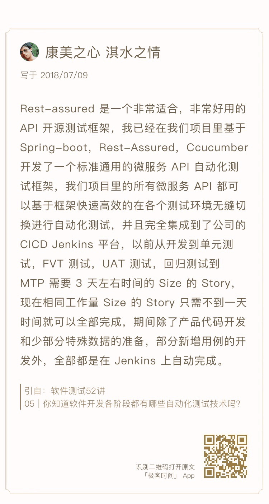

- 00 开篇词 从“小工”到“专家”，我的软件测试修炼之道.md.html
- 01 你真的懂测试吗？从“用户登录”测试谈起.md.html
- 02 如何设计一个“好的”测试用例？.md.html
- 03 什么是单元测试？如何做好单元测试？.md.html
- 04 为什么要做自动化测试？什么样的项目适合做自动化测试？.md.html
- 05 你知道软件开发各阶段都有哪些自动化测试技术吗？.md.html
- 06 你真的懂测试覆盖率吗？.md.html
- 07 如何高效填写软件缺陷报告？.md.html
- 08 以终为始，如何才能做好测试计划？.md.html
- 09 软件测试工程师的核心竞争力是什么？.md.html
- 10 软件测试工程师需要掌握的非测试知识有哪些？.md.html
- 11 互联网产品的测试策略应该如何设计？.md.html
- 12 从0到1：你的第一个GUI自动化测试.md.html
- 13 效率为王：脚本与数据的解耦 + Page Object模型.md.html
- 14 更接近业务的抽象：让自动化测试脚本更好地描述业务.md.html
- 15 过不了的坎：聊聊GUI自动化过程中的测试数据.md.html
- 16 脑洞大开：GUI测试还能这么玩（Page Code Gen + Data Gen + Headless）？.md.html
- 17 精益求精：聊聊提高GUI测试稳定性的关键技术.md.html
- 18 眼前一亮：带你玩转GUI自动化的测试报告.md.html
- 19 真实的战场：如何在大型项目中设计GUI自动化测试策略.md.html
- 20 与时俱进：浅谈移动应用测试方法与思路.md.html
- 21 移动测试神器：带你玩转Appium.md.html
- 22 从0到1：API测试怎么做？常用API测试工具简介.md.html
- 23 知其然知其所以然：聊聊API自动化测试框架的前世今生.md.html
- 24 紧跟时代步伐：微服务模式下API测试要怎么做？.md.html
- 25 不破不立：掌握代码级测试的基本理念与方法.md.html
- 26 深入浅出之静态测试方法.md.html
- 27 深入浅出之动态测试方法.md.html
- 28 带你一起解读不同视角的软件性能与性能指标.md.html
- 29 聊聊性能测试的基本方法与应用领域.md.html
- 30 工欲善其事必先利其器：后端性能测试工具原理与行业常用工具简介.md.html
- 31 工欲善其事必先利其器：前端性能测试工具原理与行业常用工具简介.md.html
- 32 无实例无真相：基于LoadRunner实现企业级服务器端性能测试的实践（上）.md.html
- 33 无实例无真相：基于LoadRunner实现企业级服务器端性能测试的实践（下）.md.html
- 34 站在巨人的肩膀：企业级实际性能测试案例与经验分享.md.html
- 35 如何准备测试数据？.md.html
- 36 浅谈测试数据的痛点.md.html
- 37 测试数据的“银弹”- 统一测试数据平台（上）.md.html
- 38 测试数据的“银弹”- 统一测试数据平台（下）.md.html
- 39 从小作坊到工厂：什么是Selenium Grid？如何搭建Selenium Grid？.md.html
- 40 从小工到专家：聊聊测试执行环境的架构设计（上）.md.html
- 41 从小工到专家：聊聊测试执行环境的架构设计（下）.md.html
- 42 实战：大型全球化电商的测试基础架构设计.md.html
- 43 发挥人的潜能：探索式测试.md.html
- 44 测试先行：测试驱动开发(TDD).md.html
- 45 打蛇打七寸：精准测试.md.html
- 46 安全第一：渗透测试.md.html
- 47 用机器设计测试用例：基于模型的测试.md.html
- 48 优秀的测试工程师为什么要懂大型网站的架构设计？.md.html
- 49 深入浅出网站高性能架构设计.md.html
- 50 深入浅出网站高可用架构设计.md.html
- 51 深入浅出网站伸缩性架构设计.md.html
- 52 深入浅出网站可扩展性架构设计.md.html
- 测试专栏特别放送 浅谈全链路压测.md.html
- 测试专栏特别放送 答疑解惑第一期.md.html
- 测试专栏特别放送 答疑解惑第七期.md.html
- 测试专栏特别放送 答疑解惑第三期.md.html
- 测试专栏特别放送 答疑解惑第二期.md.html
- 测试专栏特别放送 答疑解惑第五期.md.html
- 测试专栏特别放送 答疑解惑第六期.md.html
- 测试专栏特别放送 答疑解惑第四期.md.html
- 结束语 不是结束，而是开始.md.html
- 捐赠
测试专栏特别放送 答疑解惑第一期
你好，我是茹炳晟。
首先，感谢大家对《软件测试52讲》专栏的支持与参与。
到目前为止，我已经通过测试基础知识、GUI自动化测试、API自动化测试、代码级测试、性能测试、测试数据准备、测试基础架构、测试新技术8个系列、47篇文章，和你分享了软件测试相关的所有知识点。
每篇文章后面，我都为你留下了1~2个思考题。其中，一部分思考题是让你分享你所在项目和团队的实践，和其他读者一起探讨、交流，这样大家可以互相借鉴好的做法；还有一部分思考题，是针对当篇文章中的内容，希望你可以分享一些你的想法，也想借此了解你在实际的测试工作中遇到的问题，尽我的能力再多为你提供些帮助。
47篇文章的写作，基本上已经占满了我所有的个人时间。1000多条留言，我也没有精力去一一答复，这其中还有很多不是一两句就能解释清楚的问题。还有些留言质量非常高，分享了一些我未覆盖到的内容，观点都非常赞。
所以，特别选在专栏即将结束的节点，也可以说是和你分享完了软件测试的基本概念、原理、方法的节点上，我和编辑一起策划了这个“答疑解惑”系列，从已发布的文章，以及对应的留言中，精选出一些问题，为你解答。
当然了，我的专栏还有5篇正文没有更新，我已经根据大家的反馈，重新调整了这5篇文章的主题，选择了大家最关注的、对大家更有帮助的五个技术点，和你展开分享。下周，我将继续为你更新这些文章，敬请期待。
今天这篇文章，我就先挑选了五个问题，和你分享一下我的看法。你也可以继续在留言区给我留言，说出你的见解，我们继续讨论。
问题一：从拓展思维的角度，还可以为“用户登录”功能补充哪些测试用例？
在专栏第一篇文章《你真的懂测试吗？从“用户登录”测试谈起》中，我从“用户登录”功能的测试用例设计谈起，和你分享了一个看似简单的功能，在设计测试用例时需要考虑的方方面面。在文后，我希望你可以从拓展思维的角度，思考一下还可以为这个“用户登录”功能补充哪些测试用例。
大家针对这个问题的留言质量都非常高，考虑的也都非常全面，可以说涵盖了很多我在文章中并没有涉及到的点。
你也许已经发现了，针对“用户登录”这个简单直接的功能，我们居然可以设计出这么多的测试用例。这些测试用例，既覆盖了明确定义的软件功能性需要，也覆盖了软件非功能性需求的方方面面。
可是，当在实际项目的实施过程中，当老板让你预估一下测试一个“用户登录”功能需要多少时间和工作量的时候，如果完全按照文章中的介绍的测试用例设计方法来执行测试的话，你可能会告诉老板说：“我需要至少2-3天”。此时，你的老板一定会火冒三丈，怀疑你是不是在忽悠他，就这么个简单明了的功能居然要花这么长时间的测试。
因此，这么全面的测试设计和执行通常不会出现在实际的工程项目中。站在工程实践的角度，我推荐的是“够用就好”的原则。
其实，测试的目的并不是要求软件中不存在任何错误，而是希望软件在上线运行的过程中，错误不会被触发。这就要求我们在测试用例选择的过程中，要尽可能覆盖用户最常使用的操作场景进行重点测试，同时也应该基于风险的大小来决定哪些测试应该纳入当前的测试范围。这里的风险指的是，万一软件缺陷被触发将会对业务造成哪些影响。
问题二：你有哪些好的测试用例设计实践和方法？
在专栏的第二篇《如何设计一个“好的”测试用例》文章中，我和你分享了一个“好的”的测试用例应该具备的特征、常用的几种测试用例设计方法，以及三个独家“秘籍”。相应地，我也希望你可以在留言区分享一些好的实践和方法。
大家在留言区的评论很活跃，也很精彩。这里，我再和你说说我的一些实践和方法吧。
我在文章中分享的方法都是从技术层面展开的，其实还有很多流程上的方法可以帮助测试用例的设计。比如，一些资深的测试工程师，可以将一些典型的测试用例设计整理成检查点列表（Checklist）。这样，当你完成测试用例设计后，可以再基于检查点列表来自查你的用例设计是否还存在不完备的地方。
通常情况下，测试用例的设计需要通过文档来体现。所以，你往往会花费很多的时间在文档写作上，而不能将有限的精力用在“刀刃”上。为了减少设计测试用例的文档写作时间，二把更多的时间花在测试用例的设计上，我建议你引入一些速记工具，或者是“头脑风暴”类的工具，来简化测试用例设计的文档工作。
“小黄鸭”方法不仅适用于程序的调试，同样适用于测试用例设计的自我检查。“小黄鸭”方法原本的含义是，当你在调试程序的过程中，因为无法顺利找到问题源头而无法继续的时候，可以假想有一个小黄鸭是你的听众，然后你将程序实现的思路以及业务逻辑处理的细节一一讲给它听。这样在讲述的过程中，会引发你全面的思考，并可以帮助你自发地发现问题。同样地，你也可以将测试用例的设计思路讲给小黄鸭听，以此来帮助你理清思路。
问题三：你在实施单元测试时，遇到了哪些问题，又是如何解决的？
在专栏的第三篇文章《什么是单元测试？如何做好单元测试？》中，我和你分享了单元测试的概念，和你重点讨论了用例的组成，以及在实际项目中开展单元测试的方法。在文后的思考题中，我希望你可以分析一下你所在公司在实施单元测试时遇到了的问题，以及对应的解决方案。
在留言区，我也看到了一些读者的见解，也很受益。这里，我首先会分享一下eBay在开展单元测试时的实践；然后，再挑选一位回答得很精彩的用户，做下点评。
eBay是全球知名的大型电子商务网站，已经大规模使用了微服务架构。对于单元测试而言，eBay并不会对所有的微服务以及所有的中间件全面开展单元测试。我们只会选取一些偏底层的核心应用来全面开展单元测试，而对于产品的前端代码、偏业务应用的代码，很少会执行完整意义上的单元测试。
如果你在项目中推行过单元测试，并且要求能够提供代码级的覆盖统计数据的话，那么你在实施和推行单元测试的过程中，一定会遇到诸如单元测试代码覆盖率低下的问题。这里，我的建议是，在项目的早期不要硬性规定绝度百分比的代码覆盖率指标，而是建立一个覆盖率基线，然后保证代码在每次发布前，都可以与这个基线持平或者高于这个基线的覆盖率。
另外，我还在留言区看到了一个非常具有代表性的留言，也就是这个叫作“小志”的读者留言。
他很好地归纳了当今互联网企业中单元测试的现状。的确，很多的互联网公司都在追求快速的功能实现，却一直没有强调单元测试，并且由于灰度发布机制的支持，所以对软件质量隐患的容忍度比较高。这点和传统软件测试的观念差别比较大，因为传统软件测试没有灰度发布的概念，所以对每个即将发布版本的质量控制都会非常严格。
问题四：你所在项目开展的自动化测试，真的有必要吗？
在第四篇文章《为什么要做自动化测试？什么样的项目适合做自动化测试？》中，我和你分享了自动化测试的概念，以及具备哪些特征的项目才适合做自动化测试。我还希望你能理解自动化测试是一把“双刃剑”，必要一味地为了自动化而自动化。
所以，在文后我希望你根据自己所经历的项目中的自动化测试所占比重，去进一步思考这个项目开展自动化测试的必要性。
这里，我先来分享一下eBay在自动化测试方面的具体实践。eBay早期是非常重视GUI自动化测试的，所以投入了大量的资源去大规模开发GUI测试用例。可是，随着用例规模的不断扩大，GUI测试的稳定性问题也被不断放大。同时，大量GUI测试用例的并发执行时间也成了个大问题。
为了缓解这种状态，我们逐渐将测试重心迁移到了后端服务的API测试上。API测试具有代码形式统一、执行稳定性高的特点。而原本GUI测试，我们降低了自动化测试用例的比例，并由探索式测试来完成部分GUI测试。
另外，在留言区，我看到了一些比较赞的观点。比如，这位“关柱鹏”的留言，就是站在了全局的视角描述了可重用的测试架构。这样的架构设计将非常有利于自动化测试脚本的应用。你可以参考。
问题五：你所在公司，开展代码级测试时用到了哪些自动化测试技术？
在专栏的第5篇文章《你知道软件开发各阶段都有哪些自动化测试技术吗？》中，我和你分享了在软件的全生命周期中，涉及到的自动化自动测试技术。我从单元测试、代码级集成测试、Web Service测试，以及GUI测试阶段的自动化技术这四个方面，和你分享了“自动化测试”的技术内涵和外延。
我希望你读完这篇文章后，可以回忆或者归纳下：你所在公司，开展代码级测试时用到的自动化测试技术。
这里，我还是先和你分享一下eBay的实践经验。可以说，eBay非常重视自动化测试开发，并在这方面投入了很多成本，几乎在软件研发生命周期的各个阶段都有自动化测试的支持。
比如，在单元测试阶段，有基于参数分析的自动化测试数据准备系统；在API测试阶段，有基于REST Assured的API自动化测试；在系统测试或者E2E测试中，用到了GUI自动化框架设计与开发。可以说，自动化测试已经渗入到了eBay软件研发的各个领域。
在留言区中，“康美之心 淇水之情”的留言，在我看来是一个能够很好的落地实践。Spring-boot、REST Assured、Cucumber都是当下最热门的技术。由于使用了Cucumber，所以完全有可能可以实现自己特有的基于API的行为驱动开发（BDD）。
一方面Cucumber本身就是非常成熟的BDD框架，另一方面REST Assured也支持三段式的测试用例描述。所以，用Cucumber结合REST Assured的方案，可以实现更灵活的API级别的BDD，用Cucumber结合Selenium可以实现GUI级别的BDD。
- 最后，感谢你能认真阅读这五篇文章的内容，并留下你的学习痕迹。相信这些留言，于你于我而言，都是一笔宝贵的财富。期待你能继续关注我的专栏，继续留下你对文章内容的思考，我也在一直关注着你的留言（虽然有时未能及时回复）。
© 2019 - 2023 Liangliang Lee. Powered by gin and hexo-theme-book.